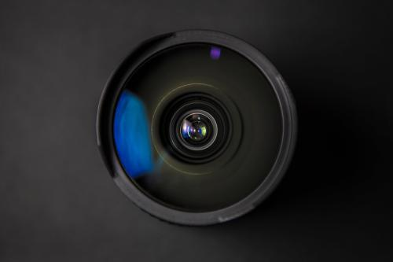
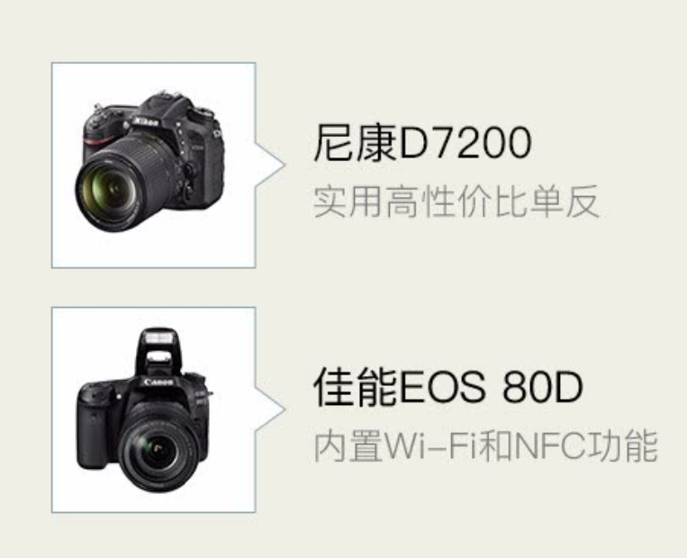

|
1.了解你的目标镜头 在察看镜头前，务必了解镜头的基本特征，并且要彻底弄明白为什么你的套头是劣质产品。照相机镜头有两项基本属性：f值和焦距。焦距是镜头最显著的特征，因为它精确地控制着你能将镜头推到多远，或你能将镜头拉到多近。焦距数字越大（以mm表示），焦距越长。一个焦距18mm的镜头可以拍摄一张非常宽幅的照片，而一个焦距250mm的镜 头则可将遥远的物体拉得非常近。但是，这只是镜头的两大属性之一。 另一个属性是镜头的的f制光圈，其重要性不亚于焦距。 f值（即光圈）决定相机的景深以及有多少光能通过镜头到达传感器。规则是数字越小，光圈越大，能到达传感器的光也越多。光圈非常重要，因为它决定你的相机在不同照明条件下拍摄速度有多快，以及拍摄时的感光度（ISO）为多少。光圈f/1.8的镜头和光圈f/5.6的镜头之间的区别可能相当于一张以400感光度拍摄于黄昏的清晰教堂照片和一张以3200感光度拍摄的模糊影像之间的区别。光圈范围还可决定景深的范围；大光圈让你可以清晰地对目标对焦，同时让背景虚化，而小光圈会让前景和背景中的所有东西看上去都很清晰。 不同的镜头可能有不同的光圈，在选购镜头时看到的f值是能达到的最大光圈：一个 f/1.8镜头最大光圈为f/1.8，但其光圈还可逐级降为f/2、f/4、f/8等。对于可能具有不同焦距的镜头。光圈范围与焦距范围相匹配：18-55mm、f/3.5-5.6镜头，焦距在18mm时最大光圈可达f/3.5，焦距在55mm时最大光圈可达f/5.6。当你继续研究比较昂贵的变焦镜头时，你会发现它们有着恒定的光圈。这些镜头（如24-70mm f/2.8）是职业摄影师的最爱。  2.突出个性化的镜头 如果你想要更精细的照片，我们推荐85mm镜头。据甘帕特介绍，事实上，85mm镜头是每位摄影人士的必备镜头。这种镜头为构图提供了理想的放大倍数，它让你在音乐会、婚礼及其他活动中无需太靠近目标以免影响活动，就能捕捉到充分的细节。不过，在光圈相同的情况下，85mm镜头比50mm镜头贵。在这篇集中介绍便宜镜头的文章中，你可以找到售价为300至350美元、规格为85mm f/1.8的佳能和尼康单反镜头 3. 广角镜头 作为视角大于50mm定焦的镜头，35mm镜头在拍摄风景和远景时提供了更多的灵活性。虽然该镜头的角度不如18-55mm宽广，但成像要鲜艳许多。佳能的35mm f/2.0镜头售价为330美元，而尼康35mm f/1.8镜头仅售200美元。当然，镜头取决于相机；如果你有佳能单反，别想着上尼康镜头可节省130美元。机身不配套，镜头就毫无用处。
4.
变焦镜头
最后，如果你只想要远距离照相的灵活性，而对光圈没有要求，则可以选择 50-250mm f/4.0-5.0的镜头，所需费用为300美元或更低。一方面，你能够获得比85mm镜头大得多的特写，而且你也可以把焦距拉回到50mm。另一方面，当光圈为4.0-5.6时，这个镜头与价格相近的定焦镜头相比成像较暗，清晰度也较差。
中远摄变焦镜头一般也比定焦镜头重许多，这也是需要考虑的一个因素。Gampat指出，某些变焦镜头可能有用，但其他较便宜的镜头（如售价300美元或以下的镜头)成像质量较差.他还说，如果你预算有限，但又想拍出清晰的照片，你应该坚持使用一两个较好的定焦镜头。对比起来，一个非常好的变焦镜头（如佳能的24-105mm f/4镜头）售价高达1000美元以上 |
 | ||||||||
| 返回上一级 | |||||||||